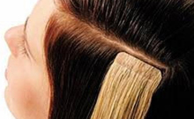

Частичное мелирование относится к щадящему окрашиванию волос, так как, при подобном способе мелирования, воздействию красителя подвергаются только отдельные пряди или отдельные зоны волос.
Существуют различные виды частичного мелирования волос. Наиболее популярным в этом сезоне является частичное мелирование в натуральные светлые оттенки с эффектом естественно выгоревших волос. При этом, волосы мелируются только в передней части прически (у лица), что придает особую свежесть и яркость лицу.
Для получения максимально натурального эффекта частичное мелирование выполняется в виде бликующих прядей с плавным переходом к основному цвету.
| Мастер | Топ-мастер | VIP-мастер |
|---|---|---|
| 11000Р | 14030Р | 10800Р |
| 8200Р | 8506Р | 6482Р |
| 7540Р | 9125Р | 1001Р |